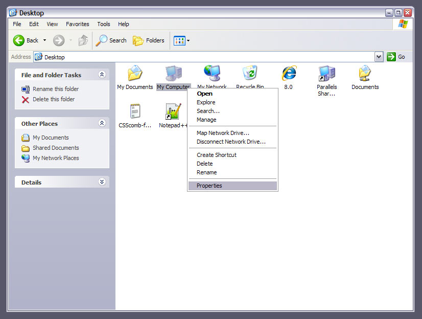
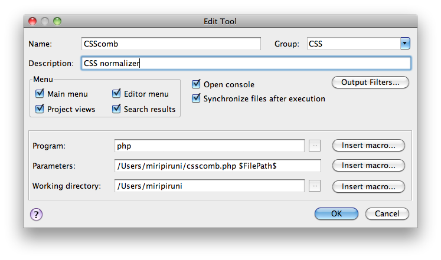

How to install CSScomb for IntelliJIDEA/WebStorm/PyCharm
Required
- PHP
- CSScomb for IntelliJIDEA/WebStorm/PyCharm
- IntelliJIDEA or WebStorm or PyCharm
Attention! If you use Microsoft Windows you need to install PHP and set the
$PATH.



Install CSScomb
-
Open Preferences → External Tools
Click Add
-

- Name: CSScomb
- Description: CSS normalizer
- Program: php
- Parameters: /path/to/csscomb.php $FilePath$